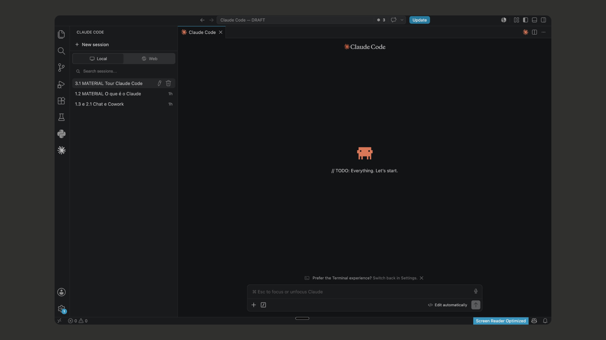
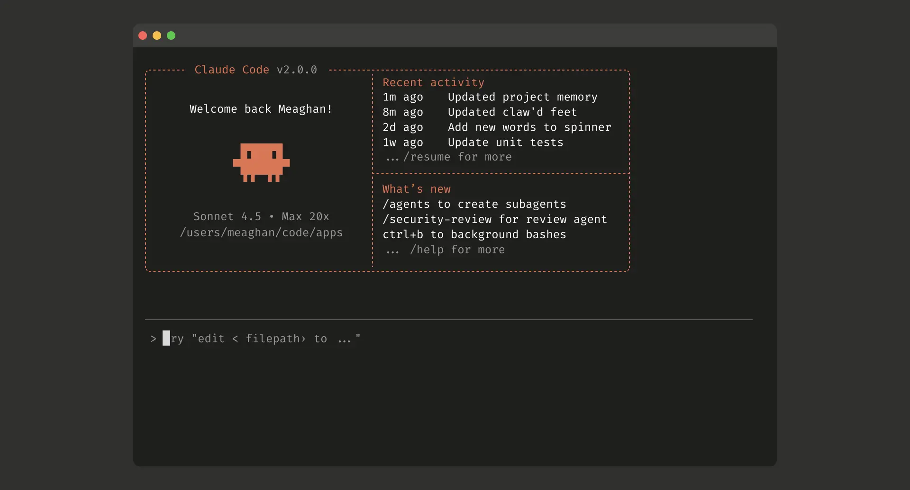
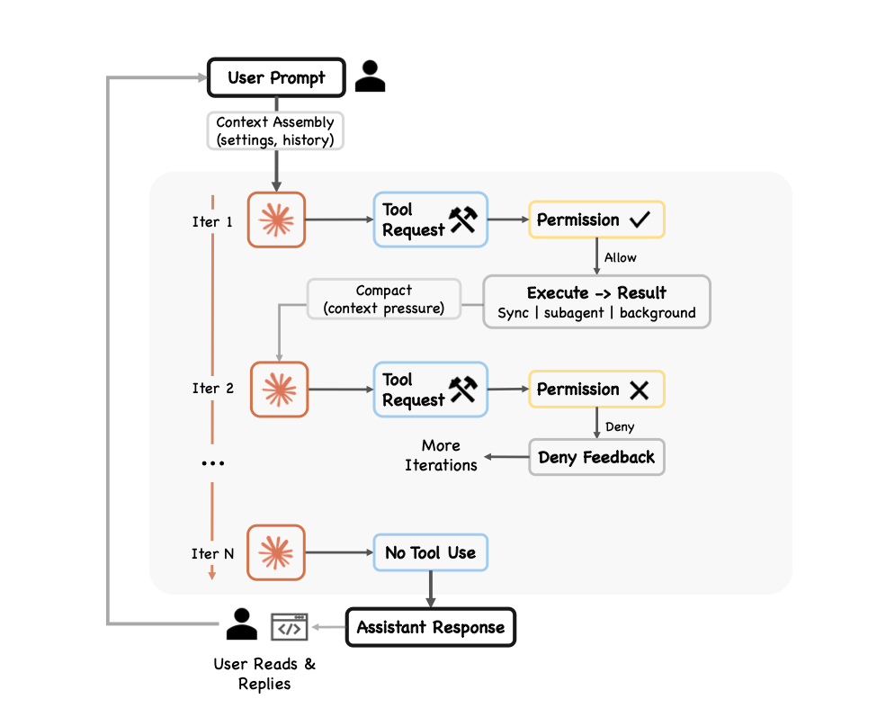

✳ Claude Sem Frescura
✳
→ 100% PRÁTICO · 1 DIA · 06 JUN 2026
Workshop
Claude
Sem Frescura.
Claude
Sem Frescura.
Michel Hilgemberg & Lucas Xiang Yu
06 · JUN · 26
10H ÀS 18H · LIVE + GRAVAÇÃO01 / 34
10H ÀS 18H · LIVE + GRAVAÇÃO01 / 34
QUEM ESTÁ CONDUZINDO
Quem está conduzindo.

Michel Hilgemberg
- Engenheiro Mecânico pela UFPR (1º lugar da turma)
- Pós-graduado em IA pela FIAP
- Intercâmbio na RWTH Aachen · Alemanha
- AI Assistant no Fraunhofer IPT (Instituto Alemão)

Lucas Xiang Yu
- Engenheiro Mecânico pela UFPR (3º lugar da turma)
- Intercâmbio na RWTH Aachen · Alemanha
- Manufacturing Assistant no Fraunhofer IPT (Instituto Alemão)
- Co-founder Dinno.chat
QUEM SOMOS02 / 34
O RESULTADO DO DIA✳
Você não vai só assistir.
Vai sair diferente.
Vai sair diferente.
VOCÊ TERÁ
Aprendido
A aplicar o Claude na prática no seu dia a dia.
VOCÊ TERÁ
Automatizado
Tarefas manuais agora rodando sozinhas no seu computador.
VOCÊ TERÁ
Economizado
Tokens sob controle. Assinatura rendendo a semana inteira.
Hoje não é dia de teoria. É dia de mão na massa.
A PROMESSA03 / 34
O MAPA DO DIA
O mapa do dia.
1ChatVocê pergunta. Ele responde.10:00 → 11:45
2CoworkVocê pede. O Claude executa.11:45 → 15:00 (almoço 12h)
3CodeVocê planeja. Ele constrói.15:00 → 17:30
+Economia de TokensO módulo que se paga sozinho.17:30 → 18:00
No final do dia você sai dominando o Claude.
AGENDA · LIVE04 / 34
COMO FUNCIONA O DIA
Dúvidas no chat a qualquer horaA gente vai respondendo ao longo do dia.
+30 minutos livres no fimPra fechar tudo que ficou em aberto.
Live + Gravação por 12 mesesReassiste quantas vezes quiser.
100% práticoDicas aplicáveis no seu dia a dia.
Bora começar. O que é o Claude e por que ele.
COMO FUNCIONA05 / 34
1.2 · O QUE É O CLAUDE
O que é o
Claude.
Claude.
De onde vem, onde vive e por que importa.
1.2 · O QUE É O CLAUDE06 / 34
O QUE É O CLAUDE
O Claude é a IA
da Anthropic.
da Anthropic.
Uma das empresas que mais cresce em IA, foco em IA confiável, pensada pra trabalho de verdade.
IA confiávelFeita pra trabalhoJá já a gente vê por que importa
1.2 · O QUE É O CLAUDE07 / 34
ONDE ELE VIVE
Diferentes formas de acessar o Claude.
Webclaude.ai no navegador
AppiOS, Android, Windows e macOS
CLIClaude Code no terminal
DesignIntegração nativa com Figma
ExtensãoDireto no seu navegador
Add-onExcel e Google Sheets
1.2 · ONDE ELE VIVE08 / 34
O TERRENO✳
Hoje são três
players principais.
players principais.
ANTHROPIC
Claude
O foco de hoje.
OPENAI
ChatGPT
O que a maioria já usa.
GOOGLE
Gemini
Forte e gratuito em parte.
Não existe "a melhor". Existe a melhor pra cada coisa.
1.2 · COMPARATIVO09 / 34
OS CARROS-CHEFE · OPUS 4.8 · GPT-5.5 · GEMINI 3.1 PRO
Claude vs ChatGPT vs Gemini.
| Métrica | O que mede | Opus 4.8 | GPT-5.5 | Gemini 3.1 | Conclusão |
|---|---|---|---|---|---|
| Humanity's Last Exam | Raciocínio geral, a prova mais difícil | 57,9% | 52,2% | 51,4% | Raciocina melhor no trabalho variado de escritório |
| SWE-bench Pro | Resolver código de ponta a ponta | 69,2% | 58,6% | 54,2% | Na hora de construir (Code), entrega com folga |
| GPQA Diamond | Raciocínio científico pós-grad | 93,6% | 93,6% | 94,3% | Empate técnico, os três gabaritaram |
| Terminal-Bench 2.1 | Operar o terminal sozinho | 74,6% | 78,2% | 70,3% | Único ponto em que o GPT lidera |
| OSWorld | Tarefas reais num PC | 83,4% | 78,7% | 76,2% | Pro Cowork, o mais capaz |
1.2 · TABELA A · CARROS-CHEFE10 / 34
QUAL MODELO USAR · OPUS · SONNET · HAIKU
Os modelos do Claude.
| Métrica | Opus | Sonnet | Haiku | Conclusão |
|---|---|---|---|---|
| SWE-bench Verified | 88,6% | 79,6% | 73,3% | Sonnet entrega ~90% do Opus, 40% mais barato |
| GPQA Diamond | 93,6% | 89,9% | 55,2% | Haiku cai feio, não é pra tarefa difícil |
| Preço (saída / 1M tokens) | $25 | $15 | $5 | Haiku custa 5× menos, é aqui que mora a economia |
| Velocidade | lento | médio | ~97 tok/s | Volume e tarefa simples? Haiku resolve |
| Melhor pra | Build difícil | O dia a dia | Volume / repetição | Sonnet padrão · Opus quando trava · Haiku em volume |
1.2 · TABELA B · MODELOS11 / 34
AS FERRAMENTAS
As ferramentas do Claude.
ChatVive no navegador. Conversa.
CoworkDesce pro seu computador, mexe nos seus arquivos, executa sem supervisão passo a passo.
CodeVai pro terminal e constrói aplicações e sistemas de verdade.
95% dos usuários moram só no Chat.
1.2 · AS FERRAMENTAS12 / 34
POR QUE A ANTHROPIC LIDERA✳
A Anthropic criou um padrão que a OpenAI e o Google tiveram que adotar.
A CONEXÃO
MCP
A "tomada universal" da IA, liga o Claude às suas ferramentas. Módulo 2 · Cowork
O CONHECIMENTO
Skills
Ensina o Claude a fazer do seu jeito, sempre igual. Módulos 1 e 3
A EXECUÇÃO
Claude Code
Trouxe o Claude pro terminal, onde o trabalho pesado acontece. Módulo 3
1.2 · AS 3 FRENTES13 / 34
—— 1.3 · MÓDULO 01 · CHAT
🕐 10h45 → 11h00
Tour —
Claude Chat.
Claude Chat.
Você pergunta. Ele responde.
1.3 · TOUR CHAT14 / 35
—— 1.3 · TOUR CLAUDE CHAT
O que tem dentro
do Claude Chat.
do Claude Chat.
ProjetosSeu espaço de trabalho com contexto fixo.
MemóriaLembra do que importa entre as conversas.
ArtefatosOnde ele entrega de verdade: documento, planilha, etc.
SkillsEnsina o Claude a fazer uma tarefa do seu jeito.
ConectoresLiga o Claude às suas ferramentas.
PluginsMix de Skills e Conectores.
1.3 · DENTRO DO CHAT15 / 35
—— 1.4 · CASE CLAUDE CHAT
Do caos à skill:
organizando seu dia.
organizando seu dia.
O QUÊ · RESULTADO CONCRETOO que você vai ver sair
Uma lista bagunçada de tarefas entra no chat. Em 45 minutos, sai um quadro visual priorizado, uma skill que repete isso toda manhã e o resultado já no Notion.
POR QUÊ · CONEXÃO COM VOCÊPor que isso importa
Todo mundo tem um dump de tarefas espalhado entre e-mail, WhatsApp e bloco de notas. Você vai ver como transformar esse caos em sistema — sem instalar nada, sem planilha, sem código.
ProjetosContextoArtefatosIteraçãoSkillsConectores
1.4 · CASE CLAUDE CHAT16 / 35
—— 2.1 · MÓDULO 02 · COWORK
🕐 11h45 → 12h00
Tour —
Claude Cowork.
Claude Cowork.
Você pede. O Claude executa.
2.1 · TOUR COWORK17 / 34
—— 2.1 · CHAT → COWORK
O que muda do Chat
pro Cowork.
pro Cowork.
CHAT — VOCÊ PERGUNTA, ELE RESPONDEChat - No Navegador ou App
- Vive no navegador ou app
- Conversa e devolve texto / artefato
- Você copia, cola, executa
COWORK — VOCÊ PEDE, ELE EXECUTACowork - No seu PC
- Desce pro seu computador
- Mexe nos seus arquivos locais
- Executa a tarefa sozinho, fim a fim
2.1 · CHAT → COWORK18 / 34
—— 2.1 · COWORK
O que o Cowork
faz por você.
faz por você.
Arquivos locaisLê, organiza e cria arquivos direto no seu computador.
AutomaçõesTarefas repetitivas rodando sozinhas.
AgentesO Claude trabalhando em várias etapas sem você no comando.
Voltando do almoço, a gente vai direto na prática.
2.1 · O QUE O COWORK FAZ19 / 36
—— 2.2 · CASE CLAUDE COWORK 1
Auditoria de fornecedores:
das NFs ao relatório.
das NFs ao relatório.
O QUÊ · RESULTADO CONCRETOO que você vai ver sair
O Cowork conecta Drive, Gmail e arquivos locais numa única tarefa. Ele coleta notas fiscais, lê contratos, cruza com contexto de emails e entrega uma planilha consolidada e um relatório PDF prontos, sem você alternar entre abas.
POR QUÊ · CONEXÃO COM VOCÊPor que isso importa
O Chat responde. O Cowork executa. Ele lê seus arquivos, acessa suas ferramentas e gera entregas reais na sua máquina. Você vai ver como montar um projeto com memória, regras e conectores. Um sistema que roda todo mês com um único prompt.
ProjetosCLAUDE.mdInstruções globaisSkillsConectoresTasks paralelas
2.2 · CASE CLAUDE COWORK 120 / 36
—— 2.2 · CASE CLAUDE COWORK 2
Painel de Tendências
do Nicho.
do Nicho.
O QUÊ · O AGENTEO que ele faz
Um agente que, com um comando, pesquisa tendências do seu nicho na web, cruza com uma lista de temas que você mantém, e entrega um dashboard HTML pronto, sozinho, fim a fim.
POR QUÊ · CONEXÃO COM VOCÊPor que isso importa
Criadores e empreendedores perdem horas toda semana tentando descobrir o que está em alta no seu nicho. Esse agente faz isso antes de você acordar e entrega o resultado formatado.
Web SearchGoogle Drive MCPCLAUDE.mdDashboard HTMLAgendamento
2.2 · CASE CLAUDE COWORK 221 / 36
—— 3.1 · MÓDULO 03 · CODE
🕐 15h00 → 15h15
Tour —
Claude Code.
Claude Code.
Você dirige. Ele constrói.
3.1 · TOUR CLAUDE CODE20 / 34
—— 3.1 · COWORK → CODE
No Code, ele escreve e executa
código por você.
código por você.
COWORKMexe e faz
- Trabalha nos seus arquivos
- Executa a tarefa que existe
CODECria do zero
- Aplicações, scripts, sistemas
- Scripts, apps e automações do zero
Não precisa saber programar. Você descreve o que quer.
3.1 · O QUE MUDA21 / 34
—— 3.1 · ONDE O CODE RODA
As duas telas onde
o Code trabalha.
o Code trabalha.

VSCodeO ambiente visual, com botões e arquivos à vista. Mais confortável pra quem tá começando.

CLI / TerminalA tela onde o trabalho de quem programa sempre aconteceu. Agora você manda nela em português.
3.1 · VSCODE E CLI22 / 34
3.1 · O CORAÇÃO DO MÓDULO✳
O modelo é o piloto.
O Code é o avião.
O Code é o avião.
🧑✈️
O MODELO
Piloto
+
✈️
O CODE
Avião inteiro
O piloto é genial, mas sozinho não sai do chão. O que faz o avião voar é todo o resto ao redor dele: ferramentas pra ler arquivos, rodar comandos, ver o resultado e ajustar a rota.
3.1 · PILOTO E AVIÃO23 / 34
—— 3.1 · O CICLO
Ele testa, vê o erro
e corrige.
e corrige.
Lê→
Executa→
Vê
→
Corrige↺
Repete

3.1 · O CICLO24 / 34
—— 3.1 · AGORA A PRÁTICA
Chega de teoria.
Bora construir.
Bora construir.
O Claude Code funciona pelo terminal. Você descreve o que quer, ele constrói.
3.1 · PRÁTICA AO VIVO27 / 38
—— 3.2 · CASE CLAUDE CODE 1
Sua base de documentos com
superpoderes do NotebookLM.
superpoderes do NotebookLM.
O QUÊ · RESULTADO CONCRETOO que você vai ver sair
O Claude Code conecta direto no NotebookLM: organiza seus documentos numa base limpa, sobe como fontes, e usa a IA do próprio NotebookLM pra gerar infográfico, quiz, mapa mental e podcast. Tudo comandado em português, sem você abrir a ferramenta.
POR QUÊ · CONEXÃO COM VOCÊPor que isso importa
O Claude Code não fica preso ao que a Anthropic oferece. Ele opera ferramentas externas, e a geração dos artefatos roda no NotebookLM, não no Claude. Você amplia o que dá pra criar sem queimar token no Code. Cada ferramenta no seu papel.
VSCodeSkillsMCP NotebookLMBase de documentosArtefatos (sem token)
3.2 · CASE CLAUDE CODE 128 / 38
—— 3.3 · CASE CLAUDE CODE 2
Vários agentes trabalhando
por você.
por você.
O QUÊ · RESULTADO CONCRETOO que você vai ver sair
Você pede uma vez, e vários agentes se dividem o trabalho: um busca os dados das suas ferramentas, um encontra os padrões, um organiza tudo. No fim, vira um dashboard publicado na internet, uma página no ar que você compartilha com quem quiser.
POR QUÊ · CONEXÃO COM VOCÊPor que isso importa
Não é mais uma IA fazendo uma tarefa de cada vez. É uma equipe de agentes trabalhando junto pra te entregar algo pronto e online. Daquele relatório que você montava na mão toda semana a um painel que se atualiza sozinho.
CLIVários agentesMCP (suas ferramentas)Dashboard automáticoPublicação na web
3.3 · CASE CLAUDE CODE 229 / 38
—— BÔNUS EXCLUSIVO
🕐 17h30 → 18h00
+01
Economia de Tokens.
Economia de Tokens.
O módulo que se paga sozinho.
Em 30 min você aprende a usar melhor os tokens da sua assinatura.
BÔNUS · ECONOMIA26 / 34
—— BÔNUS · ECONOMIA DE TOKENS
01
HACK 01 · CAVEMAN
Corta o enchimento. Fala como
homem das cavernas.
homem das cavernas.
Resposta direta. Sem enchimento.
Frases de 3-6 palavras.
Executa a ferramenta primeiro,
mostra o resultado.
Problema
O Claude é verborrágico por padrão. Cada "claro, vou te ajudar!" é token saindo do bolso.
Número
Até 75% dos tokens de saída. Resposta mais curta deixou o modelo 26 pontos mais preciso em certos testes.
Aplicação
Cola nas instruções do Projeto uma vez. Vale pra todo chat dali pra frente. Economiza e melhora, não é trade-off.
HACK 01 · CAVEMAN27 / 34
—— BÔNUS · ECONOMIA DE TOKENS
02
HACK 02 · O MODELO CERTO
Não use Opus o tempo todo.
USE SONNET PARAO dia a dia
- Escrita e análise
- Resumo
- Perguntas gerais
USE OPUS PARAQuando trava
- Decisão estratégica
- Problema complexo
- Escrita com nuance
Sonnet entrega ~90% do Opus, 40% mais barato. É a mesma tabela da manhã: lá foi teoria, aqui é o bolso.
HACK 02 · OPUS vs SONNET28 / 34
—— BÔNUS · ECONOMIA DE TOKENS
03
HACK 03 · TIMING DE JANELA
Mande um "oi" antes e encaixe duas janelas.
JANELA 1 · 5h
"oi" abre a janela
2–3h antes do trabalho
2–3h antes do trabalho
Você senta pra trabalhar
janela já rodando · saldo cheio
JANELA 2 · 5h
reset no meio do expediente
A janela
Reseta a cada 5h e começa a contar na sua primeira mensagem, não num horário fixo.
A jogada
"oi" 2-3h antes do trabalho pesado. Você senta com saldo cheio, e ainda ganha uma janela nova no meio do expediente.
HACK 03 · TIMING DE JANELA29 / 34
—— BÔNUS · ECONOMIA DE TOKENS
04
HACK 04 · PRÉ-PROCESSADOR
Condensa o PDF em outra IA antes.
Remove enchimento e formatação.
Extrai os pontos-chave.
Devolve em Markdown condensado.
Problema
PDF grande pode comer 80% da sessão. Arquivo recorrente = pedágio toda semana.
Solução
Joga numa IA grátis (Gemini, o que for) com esse prompt. Leva o Markdown enxuto pro Claude.
Enquadramento
Pré-processador descartável. Cada modelo no seu papel.
HACK 04 · PDF PRÉ-CONDENSADO30 / 34
—— BÔNUS · ECONOMIA DE TOKENS
05
HACK 05 · COMPACT
Chat longo pesado? Diga "COMPACT".
COMPACT
→ Resume a conversa em 5-7
pontos-chave: contexto crítico,
decisões e código.
→ Cola num chat novo e continua.
Problema
Chat longo consome tokens exponencialmente. Mas trocar de chat = perder o contexto.
Solução
Continua de onde parou, sem carregar o peso morto.
Diferencial
Eu uso isso direto. Tenho a skill montada e vou mostrar.
HACK 05 · COMPACT31 / 34
—— BÔNUS · ECONOMIA DE TOKENS
06
HACK 06 · RTK · BÔNUS PRO TERMINAL
RTK, o primo do caveman, pro terminal.
O QUE É
Terminal
comprimido
comprimido
Comprime a comunicação de comandos de terminal, de forma enxuta em vez de tudo por extenso.
ECONOMIA
22–87%
Em comandos de terminal. Empilha com caveman + COMPACT, não competem, somam.
CALIBRAGEM
Pra quem
vive no Code
vive no Code
Se você vive no Chat, caveman + COMPACT já ajudam muito. RTK é o próximo nível.
HACK 06 · RTK32 / 34
✳ Claude Sem Frescura
BÔNUS · RECAP
Em 1 dia você aprendeu a
dominar o Claude de Verdade.
dominar o Claude de Verdade.
DE MANHÃ
Chat
Você pergunta, ele responde.
→
PÓS-ALMOÇO
Cowork
Você pede, ele executa.
→
À TARDE
Code
Você planeja, ele constrói.
Construiu, automatizou e economizou. Sem frescura, com aplicação.
RECAP DO DIA33 / 34
✳ Claude Sem Frescura
Obrigado.
Foi um prazer.
Ah, escaneie o QR code ao lado e responda essa pesquisa de satisfação.
CLAUDE SEM FRESCURA34 / 34